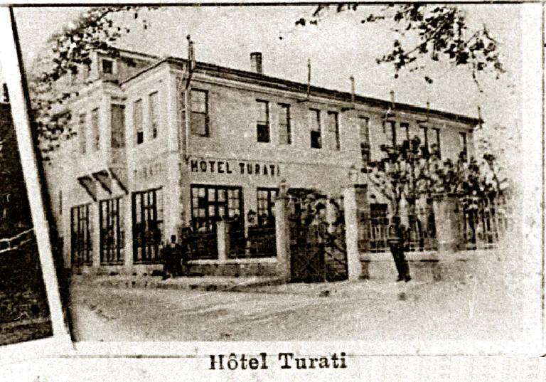
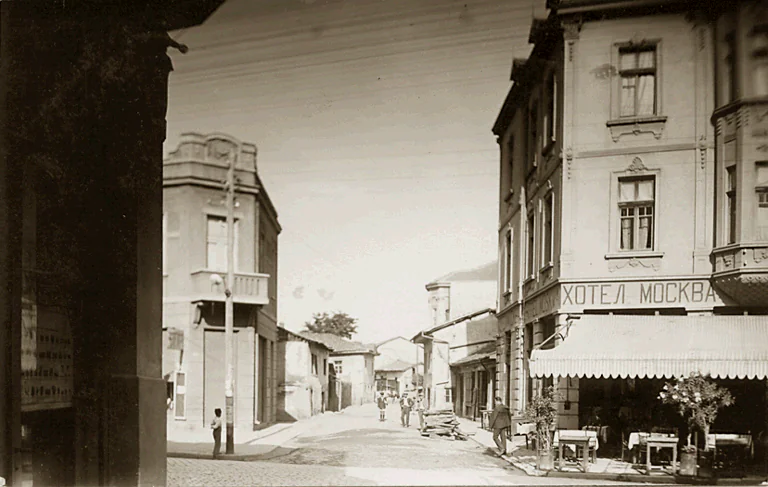
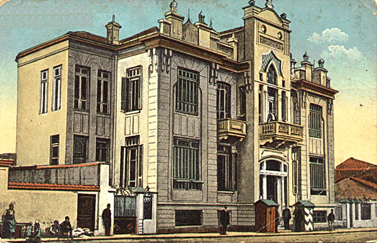
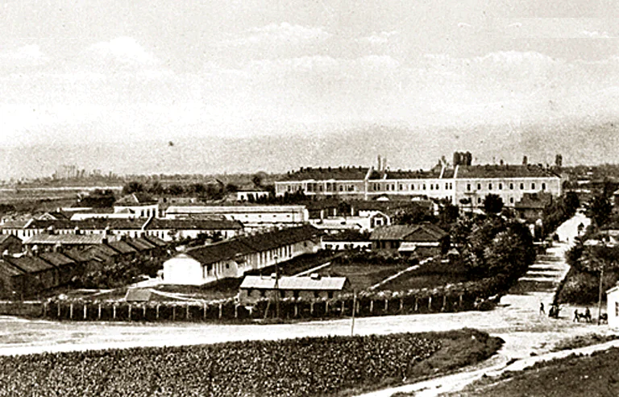
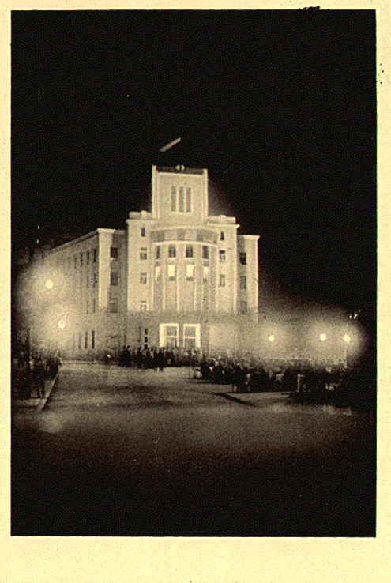
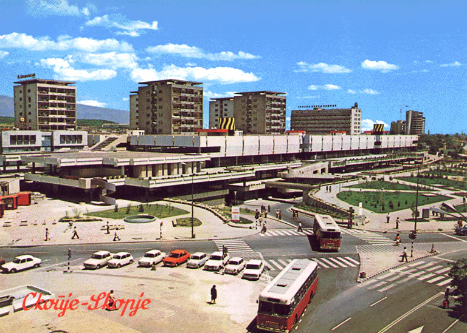

Скопље 1916 - 1917 панорама 1
Документи из Балканских ратова
- Година
- 1916-1917
- Трајање
- 00:11

Хотел Турати. Подигнут крајем 19. века.

Фотографија је снимљена са објекта старе железничке станице - данашњег Музеја града Скопља, која је изграђена 1873. године за време Отоманског царства. У првом плану је прилаз железничкој станици, са ограђеним зеленим површинама. У продужетку је главна улица која води ка тргу. На почетку улице са леве стране је хотел „Русија“.

Поглед ка главној улици „Македонија“. Капија је постављена у част неког важног госта. Лево од ње је хотел „Русија“. - почетак 20. века.

Зграда суда, 1920-их.

Зграда суда, 1920-их.

Зграда Јеврејске општине - 1920-их.

Дом српских сестара - 1920-их.

Скопље после 1930. год. Поглед на главну улицу, од данашњег Музеја града Скопља ка тргу. Два виша објекта су: Гранд хотел „Бристол“, а поред њега десно хотел „Српски краљ“. Архитектура објеката има еклектично обликоване елементе.

Хотели Српски краљ и Бристол. - 1920-их.

Кућа браће Читкушев. - 1920-их

Кућа апотекара Ристића, популарно названа Ристићева палата. Лево на фотографији види се део хотела „Бели орао“. (1920-их)

Ристићева палата - око 1925. године.

Ристићева палата. Лево на фотографији види се део хотела „Бели орао“. (око 1925. године)

Хотел „Париз“. Фотографисано је двориште хотела, у коме су се налазиле пивница и посластичарница. - 1920-их

Хотел „Москва“ - 1930-их

Отоманска банка - око 1910.

Мали трг, одмах поред Каменог моста, на левој обали Вардара. У првом плану је споменик палим борцима у Балканским ратовима, а десно иза је Отоманска банка.
- 1920-их

Нови хотел „Сарајево“ у изградњи - на тргу. Лево од њега је позоришна кафана, а изнад ње стари хотел „Сарајево“. - 1920-их

Трг са хотелом „Сарајево“ и популарном кафаном „Маргер“, омиљеним местом грађана Скопља. Лево од хотела „Сарајево“ био је хотел „Уједињење“. У првом плану, на тротоару, седи продавац ђеврека. (око 1935. године)

Касарна скопске тврђаве - Кале. - 1920-их

Затворска зграда у Скопљу. Налазила се у непосредној близини Мустафа-пашине џамије. - крај 19. века

Хућумат (општина). У продужетку је турска пошта, а иза ње Мустафа-пашина џамија. - 1920-их

Хућумат (општина). У продужетку је турска пошта. У позадини се види Мустафа-пашина џамија. - 1920-их

Хућумат (општина). У продужетку је турска пошта, а иза ње Мустафа-пашина џамија. - 1920-их

Зграда финансијске инспекције. Данас је у њој смештен Институт за племените метале. У турском периоду био је „Хућумат“ (општина). - 1930-их

Гимнастичка сала или скопски соколски дом „Соколана“, изграђен 1936. године.

Скопски соколски дом изграђен 1936. године.

Војна болница „Црвени полумесец“ - крај 19. века. Објекат се одликује академским архитектонским маниром са ренесансним и барокним облицима.

Војна болница „Црвени полумесец“ подигнута крајем 19. века. Објекат се одликује академским архитектонским маниром са ренесансним и барокним облицима. (1920-их)

Војна болница „Црвени полумесец“ подигнута крајем 19. века.

Војна болница „Црвени полумесец“ подигнута крајем 19. века.

Поглед на главну улицу, од данашњег Музеја града Скопља ка тргу. Крангова палата, са класичним и барокним елементима. У њој је био биоскоп „Капитол“. У позадини фотографије види се Официрски дом. - 1930-их

Санаторијум „Вардар“ - 1930-их

Кућа зубара др Рубена, који је имао ординацију уз сам Камени мост на левој обали Вардара. - 1930-их

Поштански дом. - 1930-их

Народна банка, изграђена по пројекту архитекте Б. Несторовића. Архитектонски изражен упрошћени академизам у обликовању декоративних елемената и утицаји модернизма. - 1930-их.

Народна банка ноћу. Испред ње део шеталишта грађана Скопља, популарно названог „Корзо“. - 1930-их.

Народна банка, изграђена по пројекту архитекте Б. Несторовића. Архитектонски изражен упрошћени академизам у обликовању декоративних елемената и утицаји модернизма. Десно је привредна трговинска комора (архитекта М. Злоковић) - 1930-их.

Камени мост са Народном банком у позадини.- 1930-их

Народна банка, Официрски дом и део Каменог моста. - 1930-их

Народна банка са Официрским домом и Каменим мостом. Фотографија је снимљена са леве обале Вардара, са малог трга, где је било стајалиште фијакера. (1930-их)

Стара женска гимназија. - 1930-их

Термоелектрана у Скопљу - 1910. година

Унутрашњост термоелектране у Скопљу - 1910. година

Фабрика за производњу лекова. - 1920-их.

Прва бензинска станица „Shell“ у Скопљу. - 1927. година

Вежба скопских ватрогасаца. - 1930-их.

Типична кројачка радионица у старој чаршији - 1920. година

Стајалиште превозника са запрежним колима. - 1920-их

Фабрика за прераду коже у Скопљу. - 1920-их.

Каменолом у Скопљу, у Киселој Води, на падинама Водна. - 1920-их.

Аеродром у близини Скопља - 1933. година. Налазио се на данашњој локацији насеља Аеродром и Јане Сандански.

Хиподром у Скопљу. (крај 1920-их)

Биоскопска сала „Вардар“ - 1940-их. Између два светска рата у Скопљу су постојали следећи биоскопи: Зрињски, Аполо (изгорео 1930. године, а на његовом месту изграђен је биоскоп Корзо), Балкан, Вардар, Капитол, Уранија, Авала.

Споменик палим ученицима у Првом светском рату - 1920-их.

Градска апотека. - 1932. година.

Завод за осигурање радника (данашња Градска болница). - 1930-их

Скупштина Р. Македоније, 1940-их. Тих година била је Обласна дирекција.

Данашња Скупштина Р. Македоније - године пре земљотреса.

Стара - Нова бања. Део Скопља, на месту данашњег универзитета „Св. Ћирило и Методије“

Зграда Управе унутрашњих послова, изграђена 1950-их. Касније су у њу смештени Правни, Економски, Филозофски факултет и Ректорат.

Судска палата, одмах после земљотреса. Поред ње лево је стара џамија „Елен капан“.

Зграда Електропривреде (1962-1964. године), у непосредној близини градског трга.

Градски тржни центар. Изградња је званично започета 11. октобра 1969. године, а 27. априла 1973. године пуштен је у рад централни део, од када нормално функционише као комплекс.

Градски тржни центар (1969 - 1973. године) са делом парка „Жена борац“.

Градски тржни центар (1969 - 1973. године) са уређеним простором парка „Жена борац“.

Документи из Балканских ратова
Филмски преглед бр. 21
 Аквадукт4 разгледнице
Аквадукт4 разгледнице Кале30 разгледница
Кале30 разгледница Мостови60 разгледница
Мостови60 разгледница Кеј58 разгледница
Кеј58 разгледница Трг46 разгледница
Трг46 разгледница Објекти66 разгледница
Објекти66 разгледница Хришћански храмови19 разгледница
Хришћански храмови19 разгледница Муслимански објекти33 разгледнице
Муслимански објекти33 разгледнице Официрски дом29 разгледница
Официрски дом29 разгледница Позориште28 разгледница
Позориште28 разгледница Железничка станица13 разгледница
Железничка станица13 разгледница Школе36 разгледница
Школе36 разгледница Паркови12 разгледница
Паркови12 разгледница Пијаце18 разгледница
Пијаце18 разгледница Улице38 разгледница
Улице38 разгледница Панорама I60 разгледница
Панорама I60 разгледница Панорама II30 разгледница
Панорама II30 разгледница Колажи55 разгледница
Колажи55 разгледница Поплаве9 разгледница
Поплаве9 разгледница Земљотрес27 разгледница
Земљотрес27 разгледница Скопље 200026 разгледница
Скопље 200026 разгледница